Zhibo Pang 庞智博
Tenured Professor & Ph.D. Advisor @ Peking University北京大学长聘教授、博士生导师 · 北京大学
School of Advanced Manufacturing and Robotics
Director, PKU Physical Intelligence Lab北京大学先进制造与机器人学院
北京大学物理智能实验室主任
Former Senior Principal Scientist, ABB Corporate Research, Sweden (2013–2025)
Adjunct / Dual-appointed Professor, KTH Royal Institute of Technology (2018–2025)曾任 ABB 集团瑞典研究院资深主任科学家（2013–2025）
瑞典皇家理工学院（KTH）兼职 / 双聘教授（2018–2025）
About the Lab实验室简介
The PKU Physical Intelligence Lab at Peking University, led by Prof. Zhibo Pang, focuses on robots and autonomous control systems for both traditional and emerging industrial scenarios. We develop the full stack of urgently needed intelligent software and hardware technologies — from multimodal embodied AI models to high-dynamic dexterous robotic systems — with the goal of redefining flexible precision manufacturing through embodied intelligence.北京大学北京大学物理智能实验室由庞智博教授领衔，聚焦面向传统与新兴工业场景的机器人与自动控制系统，研发产业界亟需的智能与软硬件全栈技术——从多模态具身智能模型到高动态灵巧机器人系统，以具身智能重新定义柔性精密制造。
Our research is organized around the PAM (Physical-Attribute Model) paradigm: a unified embodied-intelligence framework that represents the physical semantics affecting robot action generation, efficiently produces massive simulation scenarios and training data, and delivers generalization, precision, and industrial-grade reliability for high-value contact-rich manipulation tasks. We pursue a deep integration of mechanics, classical control, and artificial intelligence.我们的研究围绕 PAM（物理属性模型）范式展开：一套统一的具身智能框架，用于表征影响机器人动作生成的物理语义，高效生成海量仿真场景与训练数据，并为高价值富接触操作任务提供泛化性、精度与工业级可靠性。我们追求力学、经典控制与人工智能的深度融合。
Prof. Pang proposed the Cloud-Fog Automation (CFA) and Cloud-Fog Robotics technology frameworks in 2017, which were later highlighted by ABB's global CTO and adopted in ABB's product strategy, including the OmniCore robot controller generation. Before joining Peking University, he spent twelve years at ABB Corporate Research Sweden, where he led the software and communication technologies of several world-first industrial products, including ABB Mobile YuMi — the industry's first mobile dual-arm humanoid collaborative robot.庞智博教授于 2017 年提出云雾自动化（CFA）与云雾机器人技术体系，后被 ABB 全球 CTO 在主旨演讲中重点阐述，并纳入 ABB 产品战略，包括新一代机器人控制器 OmniCore。加入北京大学前，他在 ABB 瑞典研究院工作十二年，领导了多项业界首创工业产品的软件与通信技术，包括 ABB Mobile YuMi——业界首款移动式双臂类人协作机器人。
🚀 Opportunities招聘
We are recruiting Ph.D. students, master students, postdoctoral researchers, visiting scholars, and research interns!我们长期招收博士生、硕士生、博士后、访问学者与科研实习生！
If you are passionate about embodied AI, robotics, physics-informed machine learning, or industrial cyber-physical systems, and want to work on problems that matter for real industry, you are very welcome to join us. Postdoctoral positions on foundation models are currently open.如果你对具身智能、机器人、物理信息机器学习或工业信息物理系统充满热情，并希望攻克真正面向产业的问题，欢迎加入我们。目前基础模型方向的博士后岗位虚位以待。
Please send your CV, transcripts, and a short description of your research interests to zhibo.pang@pku.edu.cn.请将个人简历、成绩单与简短的研究兴趣说明发送至 zhibo.pang@pku.edu.cn。
📰 News新闻动态
- Aug 2026 We are hiring senior algorithm interns in embodied world models and physical intelligence. Read more →招聘高级算法实习生（具身智能世界模型与物理智能方向）。 查看详情 →
- Jun 2026 The PKU Physical Intelligence Lab summer internship program is now open. Read more →北京大学物理智能实验室暑期实习招聘启动。 查看详情 →
- 2026 Our paper TCSC: Time-Consistent Synchronization and Completion for Bridging the Temporal Sim-to-Real Gap in Embodied Intelligence is published in IEEE Transactions on Consumer Electronics.论文《TCSC: Time-Consistent Synchronization and Completion for Bridging the Temporal Sim-to-Real Gap in Embodied Intelligence》发表于 IEEE Transactions on Consumer Electronics。
- 2026 Our paper Spectral-Temporal Conditioning: A Frequency-Domain Framework for Robust Robotic Imitation Learning (Temp-ACT) is published in IEEE Transactions on Consumer Electronics.论文《Spectral-Temporal Conditioning: A Frequency-Domain Framework for Robust Robotic Imitation Learning》（Temp-ACT）发表于 IEEE Transactions on Consumer Electronics。
- 2026 Our paper on the Embodied AI-Driven Integrated Development Environment for Industrial Automation Systems is published in IEEE Industrial Electronics Magazine.论文《Embodied AI-Driven Integrated Development Environment for Industrial Automation Systems》发表于 IEEE Industrial Electronics Magazine。
- 2026 TRACE is accepted by IEEE/RSJ IROS 2026; CAML is accepted by ICML 2026; three papers (RegGraft, VistaCo, PhyGen) are under review at AAAI 2027.TRACE 被 IEEE/RSJ IROS 2026 接收；CAML 被 ICML 2026 接收；三篇论文（RegGraft、VistaCo、PhyGen）投稿 AAAI 2027 评审中。
- 2026 Our paper APiLLM: Action Prompt Integration in Large Language Models for Time Series Forecasting in Process Industrial Systems is published in Advanced Engineering Informatics.论文《APiLLM: Action Prompt Integration in Large Language Models for Time Series Forecasting in Process Industrial Systems》发表于 Advanced Engineering Informatics。
- Oct 2025 Prof. Zhibo Pang joins Peking University as a Tenured Professor and founds the PKU Physical Intelligence Lab.庞智博教授加入北京大学任长聘教授，创立北京大学物理智能实验室。
🏭 Industrial Impact🏭 产业影响
Prof. Pang's innovations have been adopted by world-leading industrial automation products, generating output value of hundreds of millions of euros across the power, process, discrete, and building automation industries.庞智博教授的创新成果已被全球领先的工业自动化产品采用，在电力、流程、离散与楼宇自动化等行业创造产值超数亿欧元。
- 2025 Led software & communication technologies of the ABB Ability 800xA HI safety controller — the world's first DCS product supporting the OPC UA Safety protocol (DCS world No.1 market share).领导 ABB Ability 800xA HI 安全控制器的软件与通信技术——全球首款支持 OPC UA Safety 协议的 DCS 产品（DCS 全球市场份额第一）。
- 2023 Cloud-Fog Automation became a core selling point of ABB's new-generation robot controller OmniCore.云雾自动化成为 ABB 新一代机器人控制器 OmniCore 的核心卖点。
- 2022 Lead author of ABB's vision whitepaper for process-industry control systems.ABB 流程工业控制系统愿景白皮书首席作者。
- 2019 Led software & communication of ABB Mobile YuMi — the world's first mobile dual-arm collaborative robot, which brought ABB into the healthcare and e-commerce logistics robot markets (endorsed by Karolinska Hospital, JD, Amazon, Volkswagen, Walmart).领导 ABB Mobile YuMi 的软件与通信——全球首款移动式双臂协作机器人，助 ABB 进入医疗与电商物流机器人市场（获卡罗琳斯卡医院、京东、亚马逊、大众、沃尔玛认可）。
- 2018 Led Hitachi Energy Tropos wireless technology — one of the few wireless networks for power & energy infrastructure in the industry.领导日立能源 Tropos 无线技术——业内少数面向电力与能源基础设施的无线网络之一。
- 2017 Led Hitachi Energy WirelessHP — the world's first hybrid wireless-optical UHVDC control technology (HVDC world No.1 market share).领导日立能源 WirelessHP——全球首个混合无线–光 UHVDC 控制技术（HVDC 全球市场份额第一）。
- 2016 Led communication & software of ABB free@home — a premium building automation & security brand with millions of installations; one of the world's largest Thread ecosystems.领导 ABB free@home 的通信与软件——拥有数百万部署的高端楼宇自动化与安全品牌，全球最大的 Thread 生态之一。
- 2012 Led ABB WirelessHART process automation instrumentation — the world's first wireless standard for process automation.领导 ABB WirelessHART 流程自动化仪表——全球首个面向流程自动化的无线标准。


👥 People团队
The PKU Physical Intelligence Lab brings together a strong, multidisciplinary team spanning principal investigators, visiting scholars, Ph.D. and master students, research interns, and project management. Below are the talented individuals driving our research forward.北京大学物理智能实验室汇聚了一支实力雄厚的多学科团队，包括学术带头人、访问学者、博士与硕士研究生、科研实习生及项目管理。以下是为我们研究注入动力的优秀人才。
Principal Investigator首席研究员
Visiting Scholar访问学者
Ph.D. Students博士生
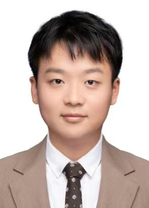
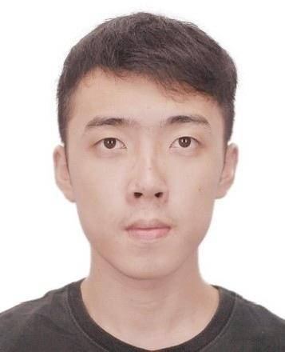
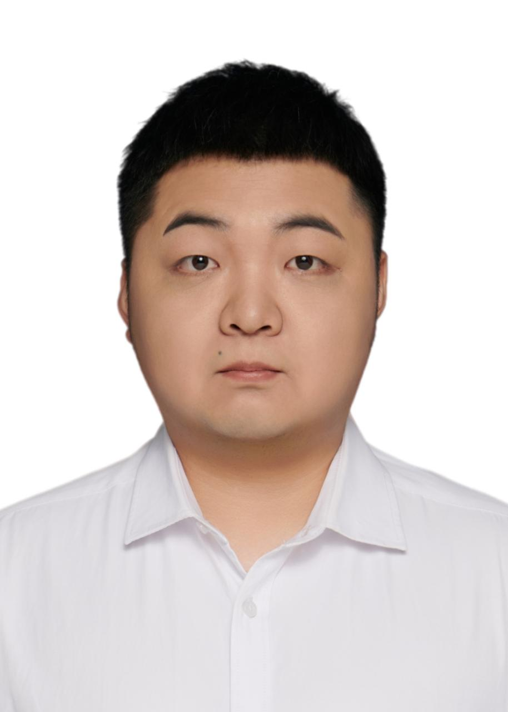
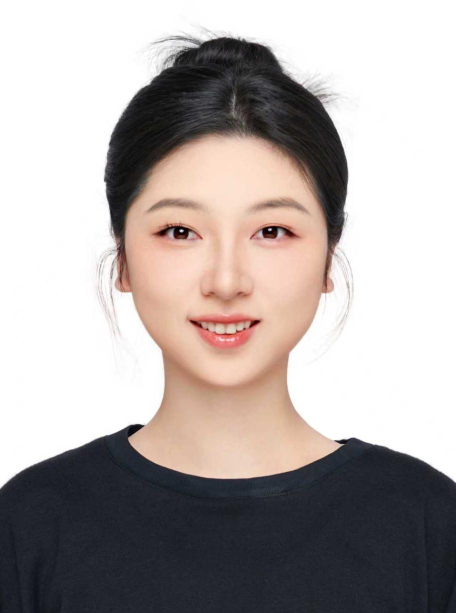
Master Students硕士生
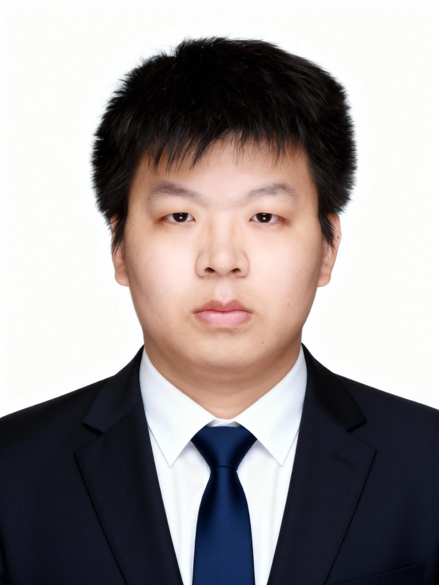
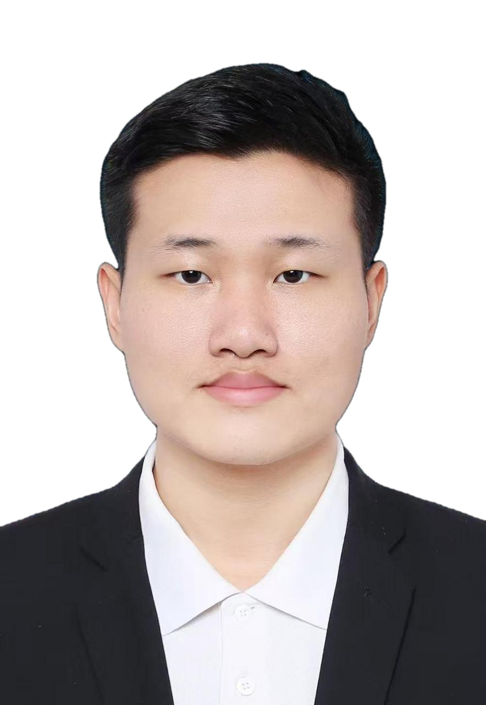
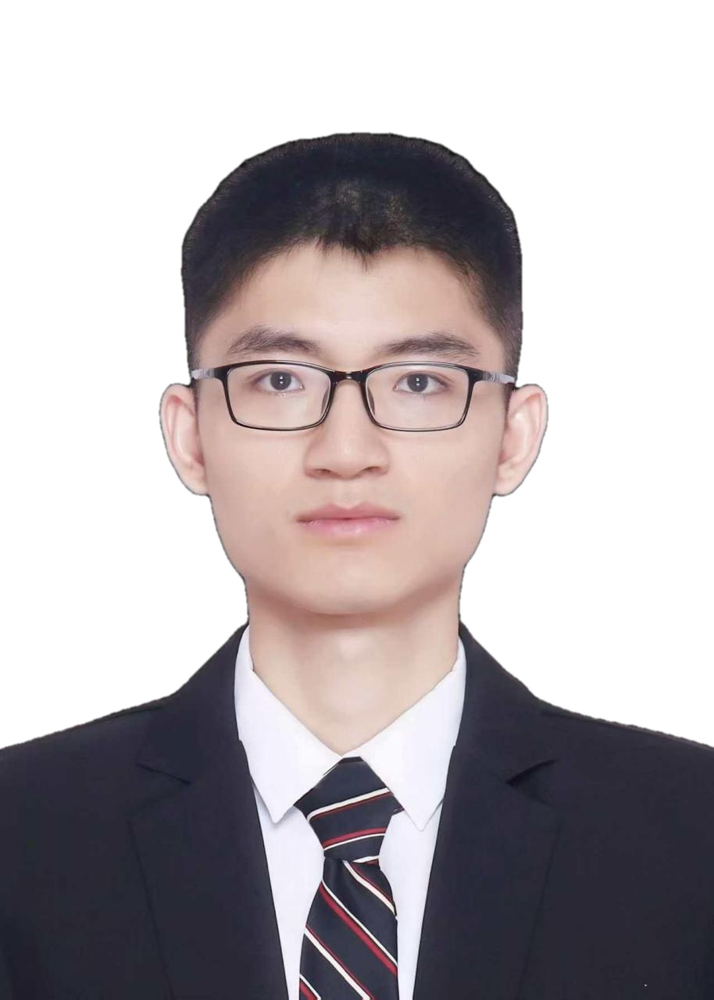
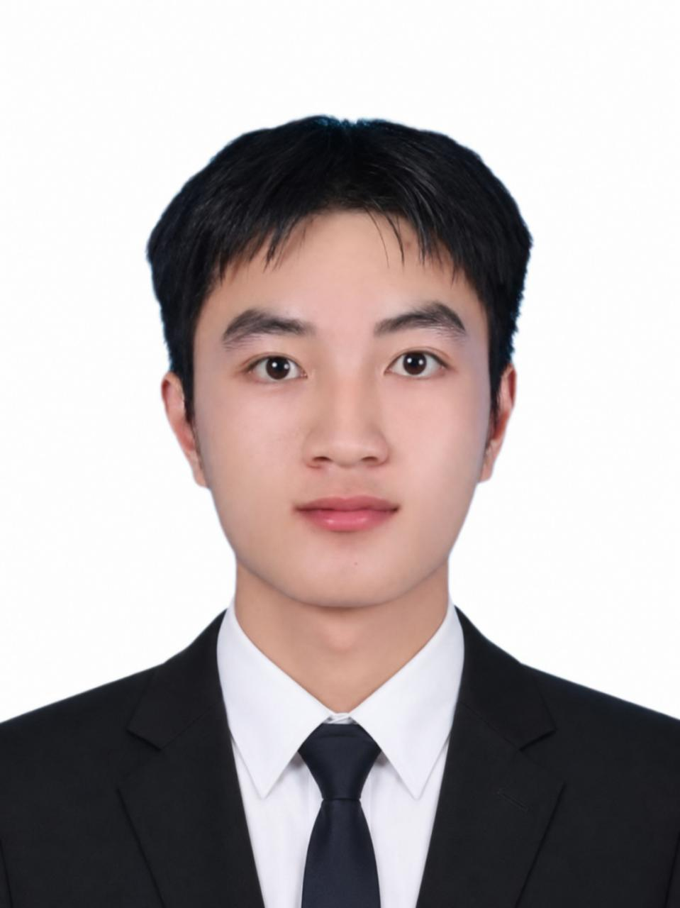
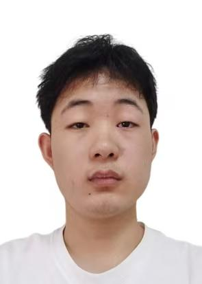
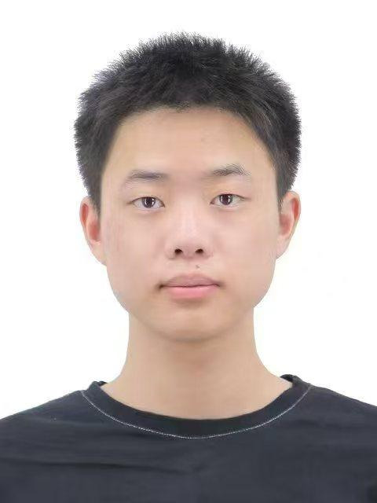
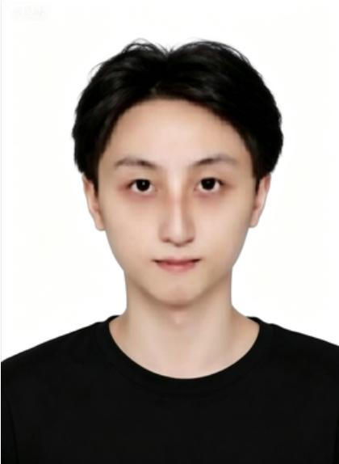
Research Interns科研实习生
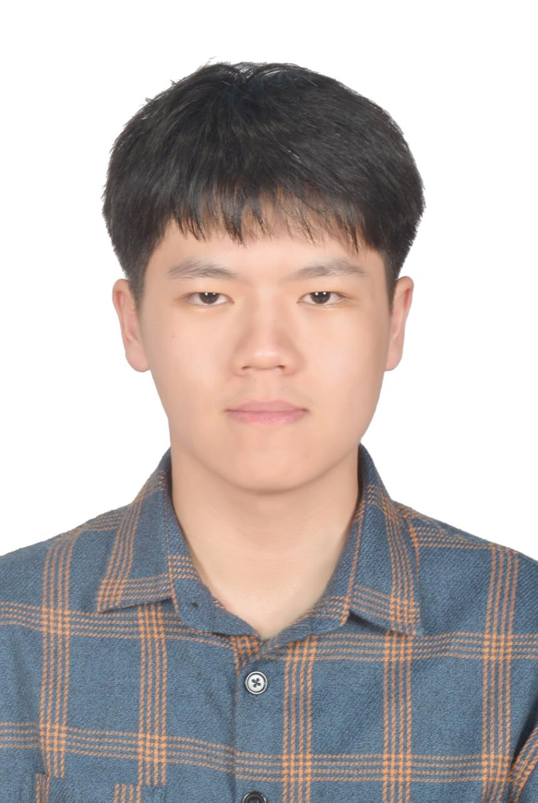
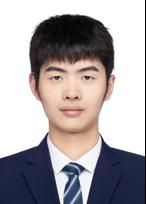
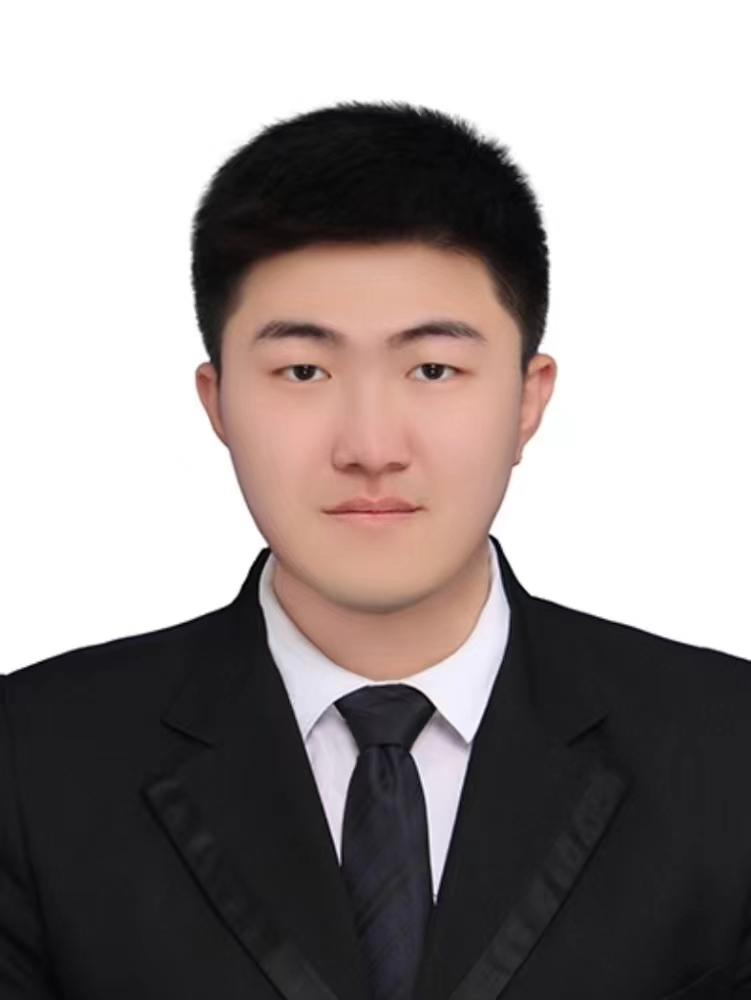
Project Management项目管理
Alumni校友
📚 Selected Publications代表性论文
* Corresponding author. Full and up-to-date list available upon request.* 通讯作者。完整最新列表可来函索取。
Embodied AI & Robot Learning具身智能与机器人学习
D. Hu et al., "TRACE: Trajectory Action Chunking Enhancement for Robust Imitation Learning in Robotic Manipulation," in IEEE/RSJ International Conference on Intelligent Robots and Systems (IROS), 2026.
Improves precision from ±1.2 to ±0.15 via encoder debiasing and visual–trajectory cross-attention.通过编码器去偏与视觉–轨迹交叉注意力，将精度从 ±1.2 提升至 ±0.15。

D. Hu et al., "Spectral-Temporal Conditioning: A Frequency-Domain Framework for Robust Robotic Imitation Learning" (Temp-ACT), in IEEE Transactions on Consumer Electronics, 2026.
Frequency-domain policy learning lifts long-horizon success rate from 3% to 36%.频域策略学习将长程任务成功率从 3% 提升至 36%。

Y. Chen et al., "TCSC: Time-Consistent Synchronization and Completion for Bridging the Temporal Sim-to-Real Gap in Embodied Intelligence," in IEEE Transactions on Consumer Electronics, 2026.
Wasserstein-aware causal synchronization raises task success from ~68% to 75%.基于 Wasserstein 的因果同步将任务成功率从约 68% 提升至 75%。

F. Ma et al., "Embodied Artificial Intelligence-Driven Integrated Development Environment for Industrial Automation Systems: Requirements and Framework," in IEEE Industrial Electronics Magazine, 2026.

Y. Liu et al., "VistaCo: Synergizing Visual Attention and Task Cognition in Robot Visuomotor Policy Learning," Forty-First AAAI Conference on Artificial Intelligence (AAAI), 2027, under review.
Real-world success rate improved from 44.5% to 67.5%.真实场景成功率由 44.5% 提升至 67.5%。

Y. Lou et al., "DynamicWAM: Dual-Path Motion Conditioning for World–Action Models in Dynamic Manipulation," Forty-First AAAI Conference on Artificial Intelligence (AAAI), 2027, under review.
Dual-path motion conditioning lifts the DOMINO benchmark success rate from 29.3% (previous SOTA) to 38.2%.双路径运动条件将 DOMINO 基准成功率从此前 SOTA 的 29.3% 提升至 38.2%。

D. Song et al., "RegGraft: Region-Aware Block Reuse in Diffusion Transformers," Forty-First AAAI Conference on Artificial Intelligence (AAAI), 2027, under review.
25% improvement in diffusion training efficiency via cross-domain block grafting.通过跨域模块嫁接，扩散训练效率提升 25%。

F. Ma et al., "PhyGen: Physics-Informed Repair Fields for Generated Robot Demonstrations," Forty-First AAAI Conference on Artificial Intelligence (AAAI), 2027, under review.
Rigid-body demonstration generation yield raised from 55.6% to 93.5%.刚体示范生成良率由 55.6% 提升至 93.5%。

Y. Fu et al., "CableSort: Force-Guided Dual-Arm Sorting of Stacked Cables," RSS 2026 DAROMA Workshop, 2026.
Instance-mask IoU improved from 0.36 to 0.93 over the strongest segmentation baseline, with 48% end-to-end sorting success.相较最强分割基线，实例掩码 IoU 由 0.36 提升至 0.93，端到端分拣成功率达 48%。

"ViPS: Visuomotor Policy-to-Servo Coordination for Precision Industrial Manipulation," IEEE Transactions on Industrial Cyber-Physical Systems (TICPS), under review.
Installation success rate improved from 35% to 78%.装配成功率由 35% 提升至 78%。

"UPST: Unified Pose-Stream Teleoperation for Heterogeneous Robot Control and Demonstration Generation," submitted to IEEE Industrial Electronics Magazine, 2026.
Unified pose-stream teleoperation cuts task time by 24.5% over the VR baseline and raises ACT success from 69.5% to 76.8%.统一位姿流遥操作相较 VR 基线缩短任务时间 24.5%，并将 ACT 成功率由 69.5% 提升至 76.8%。

"CRAFT: A Cloud-Fog Automation Synergistic Framework Empowered by Embodied AI in Precision Manufacturing," Robotics and Computer-Integrated Manufacturing (RCIM), under review.
Cloud–fog–edge task execution lifts real-factory success from 39.5% to 76.5% with ~7× longer continuous autonomous operation.云–雾–边协同执行将真实工厂成功率由 39.5% 提升至 76.5%，连续自主运行时间延长约 7 倍。

J. Deng et al., "STEAM: Structured Temporal Episode Annotation for Manipulation in Embodied Robots," IAI, 2026.

Y. Li et al., "DCP-ACQ: Reliable Control and Data Acquisition for Embodied Intelligence," IAI, 2026.

W. Wang et al., "MP-GOP: Mobile Photogrammetric Reconstruction and Geometric Optimization," submitted to IAI, 2026.

J. Liao et al., "GES-Bench: Simulation-Readiness Evaluation for Single-View 3D Generation," submitted to IAI, 2026.

Physics-Informed Machine Learning物理信息机器学习
L. Zhang et al., "Action Prompt Integration in Large Language Models for Time Series Forecasting in Process Industrial Systems" (APiLLM), in Advanced Engineering Informatics, 2026.
Action-aware attention reduces average MSE and MAE by 18.6% and 10.7% over the SOTA method.动作感知注意力相较 SOTA 方法将平均 MSE 与 MAE 分别降低 18.6% 与 10.7%。

Y. Luo, J. Wang, et al., "MMET: A Multi-Input and Multi-Scale Transformer for Efficient PDEs Solving," in International Joint Conference on Artificial Intelligence (IJCAI), 2025.

Y. Luo, P. Zhu, et al., "Mitigating Gradient Pathology in PINNs through Aligned Constraint" (CAML), in International Conference on Machine Learning (ICML), 2026.

Y. Luo, D. Hu, et al., "Derivative Cheating in Fusion-Based PINNs: Understanding and Preventing," Conference on Neural Information Processing Systems (NeurIPS), 2026, under review.

Cloud-Fog Automation & Industrial Communications云雾自动化与工业通信
J. Jin, K. Yu, J. Kua, N. Zhang, Z. Pang*, and Q.-L. Han*, "Cloud-Fog Automation: Vision, Enabling Technologies, and Future Research Directions," in IEEE Transactions on Industrial Informatics, vol. 20, no. 2, pp. 1039–1054, 2024.

H. Lv, Z. Pang*, et al., "Cloud–Fog Automation: Heterogeneous Applications Over New-Generation Infrastructure of Virtualized Computing and Converged Networks," in IEEE Industrial Electronics Magazine, 2024.

M. Zhan, Z. Pang*, et al., "Joint Error Detection and Correction for Safety Communication: Reducing the Alarm Rate of Transmitted Safety Messages," in IEEE Industrial Electronics Magazine, 2024.

M. Zhan et al., "High Throughput Joint Error Detection and Correction Based on GRAND-MO and CRC," in IEEE Transactions on Consumer Electronics, 2024.

M. Zhan et al., "Noise Error Pattern Generation Based on Successive Addition-Subtraction for GRAND-MO," in IEEE Communications Letters, vol. 26, no. 4, pp. 743–747, Apr. 2022.

Y. Liu, Z. Pang, et al., "RL-Based Joint Latency Optimization for Software-Defined Wireless Cloud Fog Automation," in IEEE International Conference on Industrial Informatics (INDIN), 2025.

Y. Liu, Z. Pang, and Y. Ding, "CFA-OpenRAN: An Integrated Communication, Computing, and Control Architecture for Wireless Cloud Fog Automation Based on O-RAN," in the 22nd IEEE International Conference on Industrial Informatics (INDIN), Beijing, China, Aug. 2024.


🎓 Teaching教学
-
Development Practice of Robotic Embodied Intelligence Systems机器人具身智能系统开发实践 (new course, under construction)（新课，建设中）
A practice-oriented course covering the full pipeline of embodied AI development in four units: task simulation, data collection, model training, and inference deployment.一门面向实践的课程，覆盖具身智能开发的完整流程，分为四个单元：任务仿真、数据采集、模型训练与推理部署。 -
Embodied AI Development Bootcamp具身智能开发训练营 (Student Engineering & Science Innovation Association)（学生工程与科创协会）
A hands-on training camp that bridges classroom learning and industrial deployment, strengthening students' practical engineering skills in embodied intelligence.一门连接课堂学习与产业部署的动手训练营，强化学生的具身智能工程实践能力。